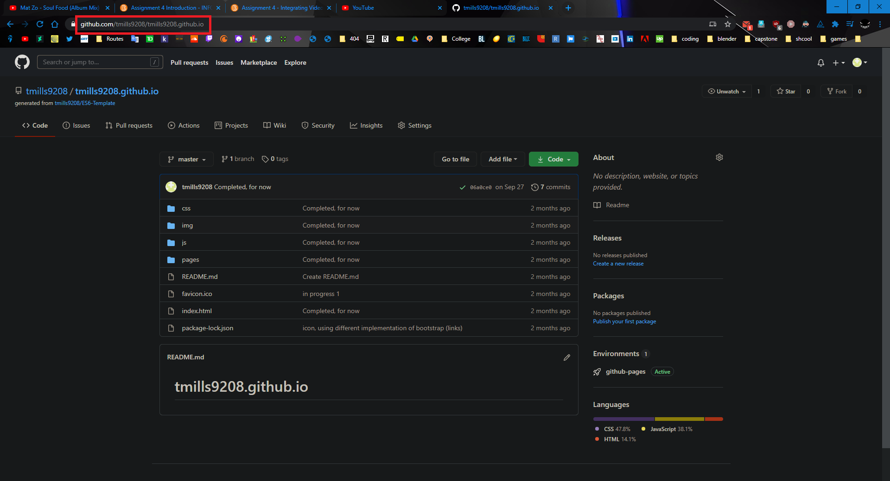
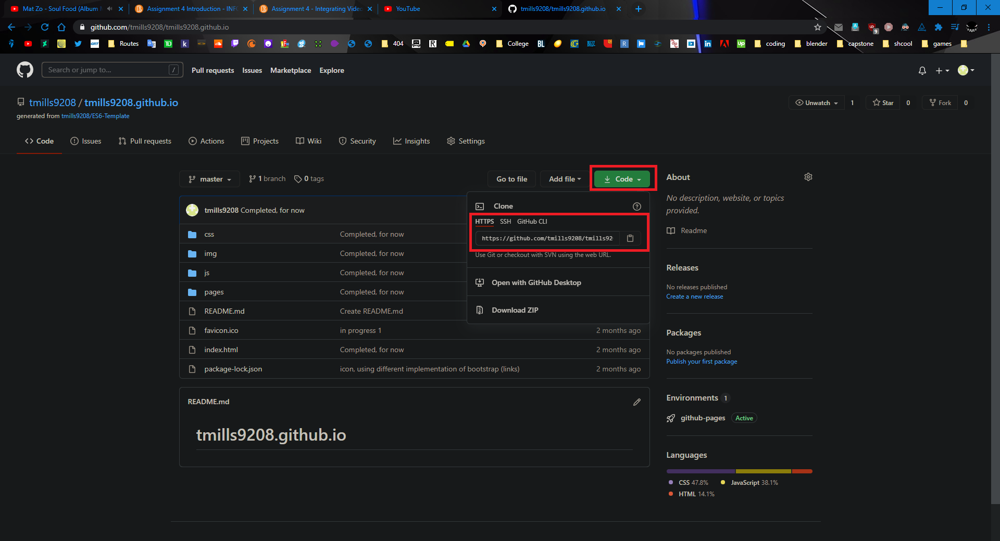
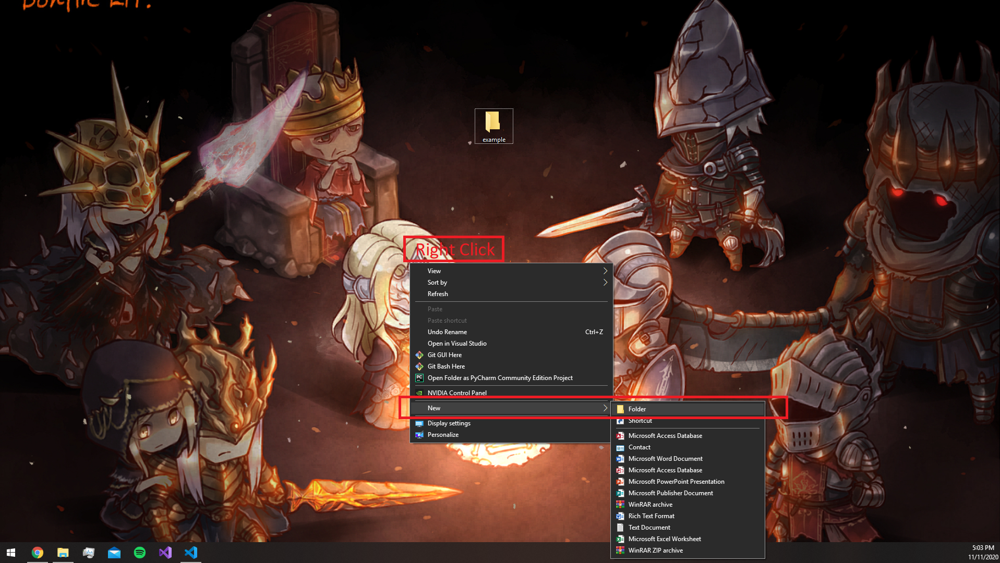
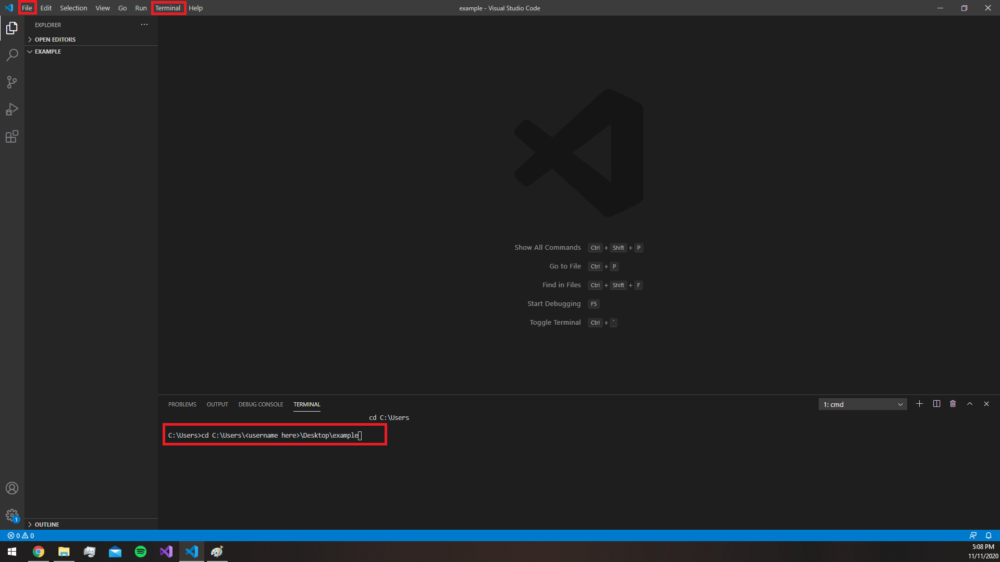
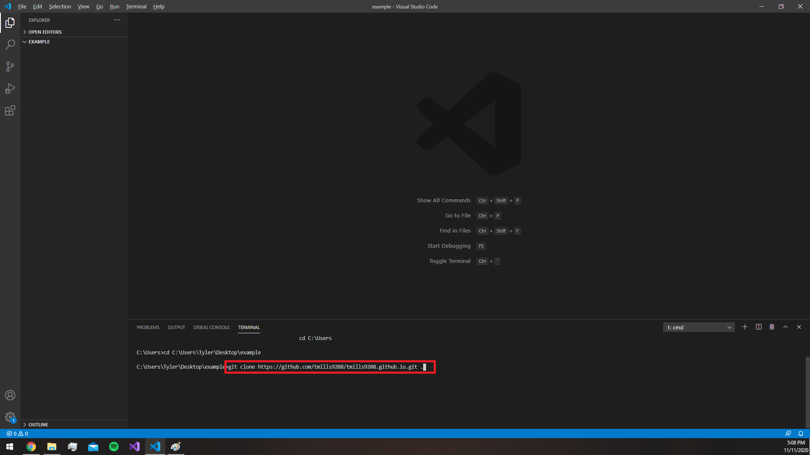
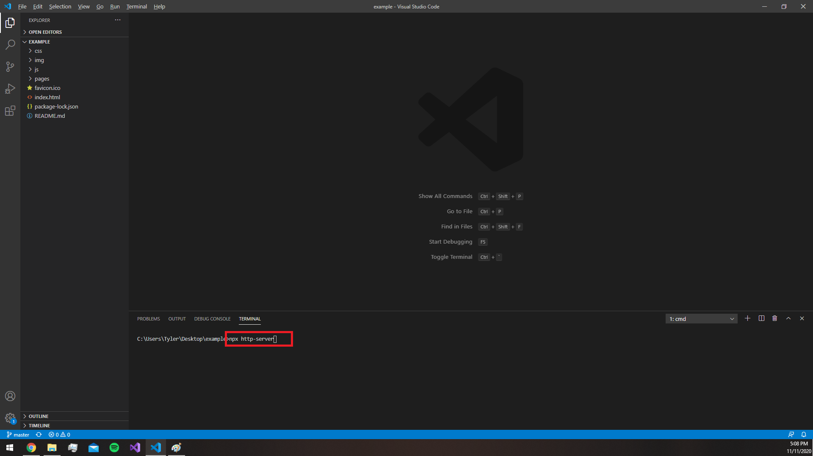

How to create my portfolio website!
In order to do this, you must have git, and should have node. I recommend vscode for coding and using a terminal for this short tutorial.
-
Step 1
Go to "https://github.com/tmills9208/tmills9208.github.io". You may or may not have a dark theme for your browser, I have one called Dark Reader on google chrome.

-
Step 2
Go to "https://github.com/tmills9208/tmills9208.github.io". You may or may not have a dark theme for your browser, I have one called Dark Reader on google chrome.

-
Step 3
Go to your desktop and create a new folder by right clicking, going to new, and clicking folder. Give it a name of your choosing, for example.. 'example'

new > folder, name it something like 'example'"> -
Step 4
If you have vscode, open the application and open your newly created 'example' folder. Create a terminal window. If the terminal window isnt centered onto your example folder, simply just type in 'cd C:\Users\"your name here"\Desktop\example' and enter

-
Step 5
In terminal, type 'git clone "paste git url here from step 2" .' and it should copy the contents of my portfolio repository.

-
Finished!
You are all done now. To run this server for yourself, type in terminal "npx http-server" and in the url of your browser, enter "localhost:'port here'". Port here, for me, is 8080, or what the terminal will tell you.
